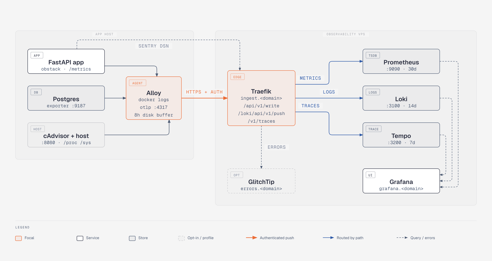

🔭 Observability Stack¶
An application-independent Grafana LGTM stack. One deployment on a VPS serves every project.



Onboarding a new FastAPI + Postgres app is four steps: copy agent/, add a few Docker labels,
uv add obstack, one function call.
✨ What You Get¶
- 📊 Metrics, logs and traces — Prometheus, Loki and Tempo behind one Grafana, all three carrying the same identity labels so you can jump between them
- 🔐 One authenticated ingest host —
ingest.<domain>exposes three paths and nothing else is reachable from outside - 🏷️ Docker-label discovery — the agent finds scrape targets and log streams from labels; no per-app agent config
- 💾 Outage-proof — the agent buffers all three signals to disk and replays them with their original timestamps
- 🐍 A four-step SDK —
obstackwires up a FastAPI app in one call - ✅ Verified, not assumed —
make verify-signals/verify-dashboards/verify-resiliencefail the build rather than a graph three months later - 🐛 Opt-in error tracking — GlitchTip, separate so a metrics-only stack doesn't pay for it
Important
Read docs/labels.md first. The four identity labels — app, service,
env, host — are the contract everything else depends on. If any other document disagrees
with it, that one wins.
🏗️ The Two Halves¶
Both are deployable independently.
Server — Traefik fronts Grafana and GlitchTip (compose.glitchtip.yml) on public subdomains, plus a single
ingest.<domain> host exposing three authenticated paths that proxy to Prometheus
remote-write, Loki push, and Tempo OTLP/HTTP. Nothing else is reachable from outside.
Agent — one Alloy container per app host. It discovers scrape targets and log streams from
Docker labels, runs optional cAdvisor / postgres-exporter via Compose profiles, receives OTLP
traces from the local app, and pushes everything to ingest.<domain> over HTTPS with basic
auth and local buffering. The app exposes nothing publicly.
compose.lgtm.yml on its own is the deployed shape: nothing published, each service
building a small image with its config baked in, and Traefik routing driven by container
labels. That is what a deploy points at. Set OBS_EDGE_NETWORK / OBS_EDGE_EXTERNAL to
put it behind a proxy the host already runs, or add compose.edge.yml to bring your own.
Publishing no port is deliberate: it is what stops the authenticated ingest path from
being optional.
🚀 Quickstart¶
cp .env.lgtm.example .env.lgtm # set GF_ADMIN_PASSWORD and OBS_DOMAIN
make help # list targets
make lgtm-up # start the LGTM stack
make demo-up # start the local end-to-end demo (app + db + loadgen)
make verify-signals # assert every signal arrives, with the label contract intact
make verify-dashboards # assert every panel on every dashboard has data
Tip
make lgtm-up adds compose.lgtm.local.yml, which publishes Grafana :3000, Prometheus
:9090, Loki :3100 and Tempo :3200 / :4317 / :4318 on 127.0.0.1 and bind-mounts the
configs so an edit takes effect without a rebuild.
Error tracking is opt-in and separate — five more containers and a second Postgres, which a stack that only wants metrics, logs and traces should not pay for:
cp .env.glitchtip.example .env.glitchtip # set SECRET_KEY and POSTGRES_PASSWORD
make glitchtip-up # GlitchTip on 127.0.0.1:8001, errors.<domain> via Traefik
./scripts/verify-errors.sh --bootstrap # mint an organisation, a project and a DSN
OBS_ERROR_DSN=<the printed DSN> make demo-up
make verify-errors # assert /boom becomes an issue, correctly tagged
📦 Onboarding an App¶
# 1. copy agent/ into the app repo as observability/, then label the containers
services:
api:
labels:
obs.service: api
obs.metrics.port: "8000"
obs.metrics.path: /metrics
expose:
- "8000" # the port has to be exposed; publishing it is not needed
# 2. run the agent alongside the app
docker compose -f compose.lgtm.yml -f observability/compose.agent.yml up -d
# 3. add the SDK
uv add "obstack[grpc,sqlalchemy]"
# 4. wire it up
from obstack import setup_observability
setup_observability(app, engine=engine)
🧯 Surviving an Outage¶
The agent buffers all three signals to disk and replays them with their original timestamps, so a VPS that is down for a while leaves a continuous line rather than a hole.
Warning
Each buffer has a server-side window that has to be at least as generous — see the table in
agent/README.md. A replay the server rejects as too old is worse than no
buffer at all: it looks like it worked.
make verify-resilience # stops the server for 15 min, asserts no gap in any signal
💾 Backup & Restore¶
make backup # grafana.db + GlitchTip's database
make backup ARGS="--all --keep 7" # ...plus the three TSDBs, keeping the newest 7
make restore DIR=backups/<stamp> # dry run: prints what it would replace
make restore DIR=backups/<stamp> ARGS=--yes # and now for real
Caution
make restore is a dry run until you add ARGS=--yes. Read what it prints before you do.
Dashboards are files in git, so the irreplaceable state is smaller than it looks: grafana.db
(the admin account, users, annotations, alert state) and GlitchTip's Postgres. Those two are the
default set. The TSDBs are opt-in — they are retention-bounded and 25 GB-capped, and a routine
backup should not be tens of gigabytes. Each is copied the way its storage engine allows rather
than all three the same way; scripts/backup.sh's header says which and why.
📊 Dashboards¶
Grafana comes up with all three datasources and the Applications / Databases /
Infrastructure folders already provisioned. They are read-only by design — dashboards
are files in git, not UI state.
Which is why make verify-dashboards exists: an expression that returns nothing renders as
an empty graph, indistinguishable from a quiet period, and a dashboard nobody can edit in the
browser is a dashboard nobody notices has gone blank. It runs every panel's query against the
demo and fails on any that comes back empty, so a rename in docs/labels.md breaks the build
rather than a graph three months later.
📚 Documentation¶
All of it is on the documentation site, and in this repo:
docs/labels.md |
Read this first. The label contract everything else depends on. |
sdk/obstack/README.md |
The Python SDK: settings, metric names, what one call gets you. |
agent/README.md |
The agent: labels to add, what it collects, what will bite you. |
demo/ |
A worked example of the four steps above — copy it when onboarding. |
docs/onboard-app.md |
The four-step diff in detail. |
docs/deploy-server.md |
Provisioning, DNS, first up, clock sync. |
docs/local-dev.md |
The demo stack, the verify scripts, macOS caveats. |
docs/operations.md |
Retention, backup/restore, cardinality, upgrades. |

Qatar University Machine Learning Group